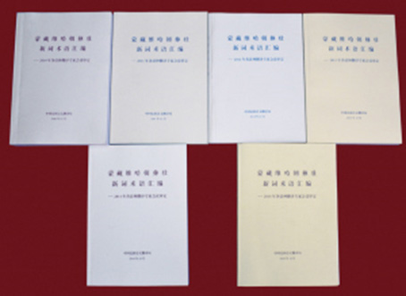

寻根问底，挑战层出不穷的新词术语
2015年12月11日 来源：《中国民族报》

各语种新词术语汇编
日新月异的时代发展，催生了千变万化的新词术语。外来语、新兴科技词汇、经济法律用语，乃至新型网络语言层出不穷……信息大爆炸的年代，语言的更新日益频繁，而翻译工作也由此面临着前所未有的挑战。
从“纳米”、“云计算”到“外向型经济”、“外汇结存”，从“反恐”、“台独”到“非典”、“艾滋病”，从“文化自觉”、“文化强国”到“创新型国家”、“统筹城乡发展”……随着社会的发展，新词术语不断涌现，如何翻译？如何规范？
对于中国民族语文翻译局的翻译人员来说，审定新词术语，使翻译规范化，是他们极为重要的工作，因为这关系着少数民族群众对现代社会的认知和对新知识的吸收。从2008年起，翻译局的7个文室，每年都分别召开新词术语审定会。
“在每年召开的哈萨克语新词术语规范会议上，全国的哈萨克语专家会一起研究、讨论。这样的集中讨论很有效率，在统一规范新词术语方面发挥了重要作用。”翻译局哈萨克语文室主任哈孜满说，比如，“把权力关进制度的笼子里”，哈萨克族没有这种抽象的表达习惯，经过会议讨论，决定译成“通过制度控制权力”。另外，如“程序公正”、“负担行为”等，得先通过《法律释义》的汉语解释准确把握意思，才能精准翻译。2015年，哈萨克语新词术语规范会议上讨论500多个词汇，近一半是法律词汇。
藏语文室主任达哇才让介绍，现在藏语文室每年的翻译量约四五百万字，新词术语的翻译质量直接影响着翻译工作的整体质量和进度。但是，目前新词术语的规范化方面却存在一些问题。譬如，“一卡通”这样的常用语，译法多样、不规范，既有政府主导的翻译，又有民间组织的翻译，还有个人自发的翻译，造成一定混乱。此外，一些新词术语已经走进群众生活，有了民间较为认可的译法，政府层面经过调查、研究、讨论之后，再发布规范的译法，不被群众接受等。
藏语文室在青海、甘肃、西藏等地区认真调研的基础上，2008年第一次在青海召开新词术语审定会时，就提出了约6000个词条，最终由专家审定通过了4000余条，后来结集成《汉藏新词语词典》出版。
达哇才让说，新词术语翻译是一项审慎的工作，必须经得起实践的检验。比如，“绿色”是近年来使用频率颇高的词汇，有“绿色食品”、“绿色出行”等。最初，“绿色”被译成藏语时，是“干净、无污染”的意思。后来，藏语文室的工作人员发现，这一译法放在“绿色通道”、“绿色旅游”中就讲不通了，最后改为直译。类似的例子很多。
朝鲜语方面也是如此。据朝鲜语文室主任安贤浩介绍，从2010年起，朝鲜语文室已连续6年在烟台、延吉、丹东、牡丹江、长春等地举办朝鲜语文翻译专家工作会议。会上，大家对这一年来在政治、经济、社会、文化等各领域中产生的新词术语进行讨论和规范。截至目前，朝鲜语文翻译专家工作会议共审议通过了3万多条新词术语，对推进中国朝鲜语新词术语翻译的标准化、统一化起到了至关重要的作用。